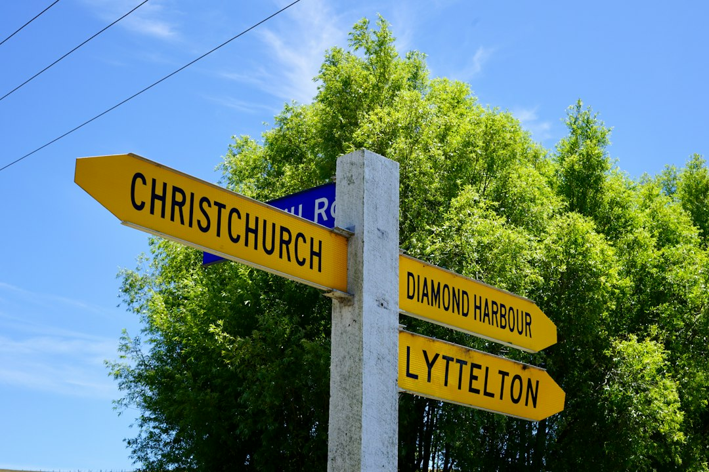

Use Stanthorpe Directory as a shortlist tool for Stanthorpe and the Granite Belt: it presents 13 categories, cross-checked listings, reviews, service comparisons and free quote requests. The home page shows examples across accommodation, mechanics, wineries, hair and beauty, and finance broking, including one finance listing that notes 100+ lenders. Treat ratings and snippets as starting points, then confirm scope, pricing and availability directly with each provider.
For residents, visitors and local operators comparing stanthorpe business directory options, the practical question is whether a listing gives enough context to choose who to contact next.
Stanthorpe Business Directory Explained
Stanthorpe Directory presents itself as a guide to trusted local businesses across Stanthorpe and the Granite Belt. Its home page is built around browsing categories, reading reviews, comparing services and requesting quotes, so the most useful outcome is a tighter shortlist rather than an instant final choice.
The 13 published categories cover everyday local needs and visitor planning: accommodation, accountants, builders, cafes and restaurants, electricians, finance brokers, hairdressers and beauty, landscapers, mechanics, painters, plumbers, real estate and wineries. That range suits different intents, from finding a tradesperson for a property job to checking places to stay, eat or visit.
Use the category first, then the profile detail. A listing with a clear service note, photos, review context and a contact path gives more decision value than a name alone.
How to read ratings and profile snippets
The featured listings show that some profiles include ratings, review counts and short descriptions. A rating can help sort options, but it should sit beside the service wording. The accommodation example refers to self-contained cottages, the mechanics example refers to automotive repairs for all makes and models, and the winery example refers to wine education, tourism courses and hospitality training.
Those snippets answer the first fit question. They do not confirm current availability, price, booking terms or job scope. Before relying on a profile, check whether the description matches the specific reason you are searching.
- For trades, ask what work is included and what details are needed before a quote.
- For accommodation or hospitality, ask whether the offer matches the visit plan.
- For professional services, ask what information the provider needs before advising.
- For finance, ask which products are relevant and how costs are disclosed.
Who this applies to
This guide applies to people who already want a Stanthorpe or Granite Belt provider and need a practical way to narrow the field. Locals may be comparing mechanics, plumbers, painters, builders or real estate services. Visitors may be checking accommodation, cafes, restaurants or wineries. Business owners may be reviewing how their own listing appears beside other local options.
The directory page also has a business pathway. It invites Stanthorpe businesses to claim a free listing or upgrade to Pro for priority placement, photos and lead tracking. That makes profile quality important: category choice, service wording, images and contact options all affect whether a customer has enough confidence to enquire.
For urgent needs, move quickly from category to contact. For slower decisions, compare two or three profiles and write down the same questions for each provider.
Local search paths that make sense
The page supports both category-led and location-led browsing. Category search suits a defined need, such as a plumber, mechanic, painter, finance broker or accommodation provider. Location browsing is useful when the service or venue needs to fit a particular area shown on the page, including Ballandean, Glen Aplin, Thulimbah, Wallangarra, Severnlea, The Summit or Applethorpe.
Use place as a practical filter. A cafes and restaurants search in Ballandean may help with a travel route, while a landscaper search near Applethorpe may be about whether a provider can service a property. The location link is only the first filter; the profile still needs to confirm fit.
For a related editorial path, the business listings Stanthorpe guide offers another way to frame the same local search before contacting providers.
Questions to ask before choosing
Once you have a shortlist, the next step is direct contact. The home page says users can call, email or request a quote through a form. Use that contact to confirm what is included, what is excluded, how pricing is handled and what information the business needs before quoting.
The finance broker example gives one concrete claim: asset, car, equipment and business finance options from 100+ lenders. That identifies the type of conversation, but a borrower still needs to ask which finance options suit their situation and how any costs or commissions are explained.
For trades and home services, prepare photos, access details and a clear description of the job. For accommodation, wineries and hospitality, prepare dates, group size and the visit purpose. A directory can organise the first search, while the provider confirms the actual offer.
- Choose the category. Start with the category that most closely matches the service, venue or professional help you need.
- Open relevant profiles. Read the description, photos, reviews and contact options before comparing providers.
- Ask specific questions. Use direct contact or a quote request to confirm scope, pricing approach and availability.
- Compare before committing. Keep two or three suitable options where cost, timing or service fit matters.
| Search path | Best for | What to confirm next |
|---|---|---|
| Category browsing | Finding a trade, professional service, venue or local business type | Service scope, pricing approach and quote requirements |
| Location browsing | Checking providers connected with a specific Stanthorpe or Granite Belt area | Availability and fit for that location |
| Featured profiles | Getting a quick sense of active or promoted examples | Whether the profile details match your actual need |
Common questions
Is the directory only for residents? No. The published categories suit residents, visitors and local businesses, including accommodation, cafes and restaurants, wineries, trades, property and professional services.
Does every listing show the same amount of detail? No. The home page shows some featured listings with ratings, review counts and service snippets. Users still need to open profiles or contact providers for full details.
Can businesses add themselves? Yes. The page invites Stanthorpe businesses to claim a free listing, with a Pro upgrade described for priority placement, photos and lead tracking.
Should a review score decide the choice? No. Use a score for shortlisting, then check the service description, photos, quote path and direct answers from the provider.
This guide covers how to use a Stanthorpe and Granite Belt directory to compare categories, listings, reviews and quote paths.